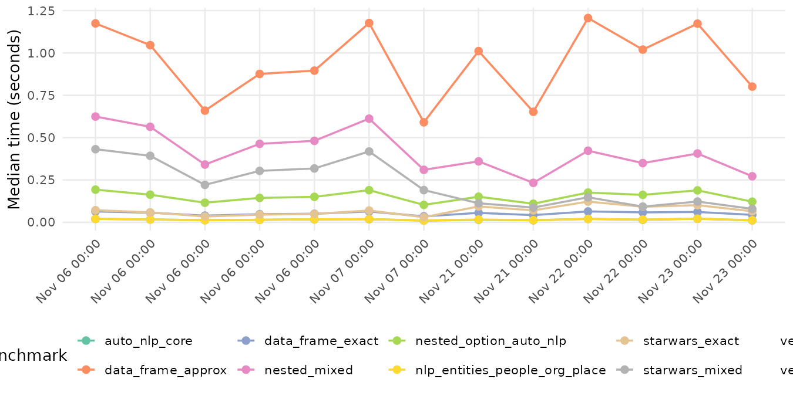

Non-blocking benchmark history for manual review over time.
20261122T000703Z-665123dmain 665123d
| Benchmark | Median | Itr/sec | Mem alloc | GC/sec | Delta vs previous |
|---|---|---|---|---|---|
| anon_auto_nlp_core | 0.020 s | 48.969 | 0.29 MB | 0.000 | +67.4% |
| anon_data_frame_approx | 1.206 s | 0.836 | 5.72 MB | 0.279 | +84.8% |
| anon_data_frame_exact | 0.064 s | 15.463 | 3.06 MB | 0.000 | +50.6% |
| anon_nested_mixed | 0.423 s | 2.366 | 1.87 MB | 0.789 | +81.4% |
| anon_nested_option_auto_nlp | 0.176 s | 5.630 | 0.38 MB | 0.000 | +59.9% |
| anon_nlp_entities_people_org_place | 0.020 s | 51.032 | 0.25 MB | 0.000 | +55.7% |
| anon_starwars_exact | 0.122 s | 8.168 | 1.21 MB | 8.168 | +73.0% |
| anon_starwars_mixed | 0.148 s | 6.516 | 2.97 MB | 6.516 | +69.7% |
| anon_vector_approx | 1.018 s | 0.985 | 4.79 MB | 0.328 | +80.8% |
| anon_vector_exact | 0.050 s | 20.155 | 2.14 MB | 0.000 | +50.9% |
| Timestamp | Machine | Ref | SHA | R | CPU |
|---|---|---|---|---|---|
| 2026-11-22T00:07:03Z | github-actions | ubuntu-latest | main | 665123d | 4.6.2 | AMD EPYC 7763 64-Core Processor |
| 2026-11-21T04:39:17Z | github-actions | ubuntu-latest | main | 4804055 | 4.6.2 | INTEL(R) XEON(R) PLATINUM 8573C |
| 2026-11-21T12:28:02Z | github-actions | ubuntu-latest | main | f4a700d | 4.6.2 | AMD EPYC 9V45 96-Core Processor |
| 2026-11-07T00:57:09Z | github-actions | ubuntu-latest | main | efb5809 | 4.6.2 | AMD EPYC 7763 64-Core Processor |
| 2026-11-07T02:42:58Z | github-actions | ubuntu-latest | main | 1ed9436 | 4.6.2 | AMD EPYC 9V45 96-Core Processor |
| 2026-11-06T15:28:07Z | github-actions | ubuntu-latest | main | 2dd806b | 4.6.2 | AMD EPYC 7763 64-Core Processor |
| 2026-11-06T16:16:04Z | github-actions | ubuntu-latest | main | e9988f6 | 4.6.2 | Intel(R) Xeon(R) Platinum 8370C CPU @ 2.80GHz |
| 2026-11-06T16:27:58Z | github-actions | ubuntu-latest | main | 9f5f30a | 4.6.2 | AMD EPYC 9V45 96-Core Processor |
| 2026-11-06T18:43:06Z | github-actions | ubuntu-latest | main | 2234c82 | 4.6.2 | AMD EPYC 9V74 80-Core Processor |
| 2026-11-06T19:30:26Z | github-actions | ubuntu-latest | main | f699893 | 4.6.2 | AMD EPYC 9V74 80-Core Processor |
| Timestamp | Machine | Benchmark | Median (sec) | Itr/sec |
|---|---|---|---|---|
| 2026-11-07T00:57:09Z | github-actions | ubuntu-latest | anon_nlp_entities_people_org_place | 0.01884731 | 51.9276430 |
| 2026-11-07T02:42:58Z | github-actions | ubuntu-latest | anon_nlp_entities_people_org_place | 0.01102763 | 88.7350159 |
| 2026-11-07T00:57:09Z | github-actions | ubuntu-latest | anon_starwars_exact | 0.06971108 | 14.1355914 |
| 2026-11-07T02:42:58Z | github-actions | ubuntu-latest | anon_starwars_exact | 0.03032597 | 32.0800474 |
| 2026-11-07T00:57:09Z | github-actions | ubuntu-latest | anon_starwars_mixed | 0.41842580 | 2.3787058 |
| 2026-11-07T02:42:58Z | github-actions | ubuntu-latest | anon_starwars_mixed | 0.19035262 | 5.2115272 |
| 2026-11-07T00:57:09Z | github-actions | ubuntu-latest | anon_vector_approx | 1.00327674 | 0.9967334 |
| 2026-11-07T02:42:58Z | github-actions | ubuntu-latest | anon_vector_approx | 0.50933032 | 1.9603414 |
| 2026-11-07T00:57:09Z | github-actions | ubuntu-latest | anon_vector_exact | 0.05009334 | 19.9752018 |
| 2026-11-07T02:42:58Z | github-actions | ubuntu-latest | anon_vector_exact | 0.02859681 | 34.9210750 |
| 2026-11-21T04:39:17Z | github-actions | ubuntu-latest | anon_auto_nlp_core | 0.01515077 | 65.3779065 |
| 2026-11-21T12:28:02Z | github-actions | ubuntu-latest | anon_auto_nlp_core | 0.01223999 | 81.8338794 |
| 2026-11-21T04:39:17Z | github-actions | ubuntu-latest | anon_data_frame_approx | 1.01100976 | 0.9898152 |
| 2026-11-21T12:28:02Z | github-actions | ubuntu-latest | anon_data_frame_approx | 0.65260900 | 1.5382614 |
| 2026-11-21T04:39:17Z | github-actions | ubuntu-latest | anon_data_frame_exact | 0.05575415 | 17.7973055 |
| 2026-11-21T12:28:02Z | github-actions | ubuntu-latest | anon_data_frame_exact | 0.04265350 | 23.5233309 |
| 2026-11-21T04:39:17Z | github-actions | ubuntu-latest | anon_nested_mixed | 0.36002591 | 2.7909865 |
| 2026-11-21T12:28:02Z | github-actions | ubuntu-latest | anon_nested_mixed | 0.23300109 | 4.2344943 |
| 2026-11-21T04:39:17Z | github-actions | ubuntu-latest | anon_nested_option_auto_nlp | 0.15119277 | 6.6260590 |
| 2026-11-21T12:28:02Z | github-actions | ubuntu-latest | anon_nested_option_auto_nlp | 0.10987515 | 9.1700568 |
| 2026-11-21T04:39:17Z | github-actions | ubuntu-latest | anon_nlp_entities_people_org_place | 0.01644865 | 60.8253705 |
| 2026-11-21T12:28:02Z | github-actions | ubuntu-latest | anon_nlp_entities_people_org_place | 0.01258461 | 77.3447344 |
| 2026-11-21T04:39:17Z | github-actions | ubuntu-latest | anon_starwars_exact | 0.09362492 | 10.6847385 |
| 2026-11-21T12:28:02Z | github-actions | ubuntu-latest | anon_starwars_exact | 0.07071589 | 14.1925234 |
| 2026-11-21T04:39:17Z | github-actions | ubuntu-latest | anon_starwars_mixed | 0.11255747 | 8.1865606 |
| 2026-11-21T12:28:02Z | github-actions | ubuntu-latest | anon_starwars_mixed | 0.08717476 | 10.7226137 |
| 2026-11-21T04:39:17Z | github-actions | ubuntu-latest | anon_vector_approx | 0.86692665 | 1.1486577 |
| 2026-11-21T12:28:02Z | github-actions | ubuntu-latest | anon_vector_approx | 0.56289438 | 1.7680714 |
| 2026-11-21T04:39:17Z | github-actions | ubuntu-latest | anon_vector_exact | 0.04276010 | 23.2894904 |
| 2026-11-21T12:28:02Z | github-actions | ubuntu-latest | anon_vector_exact | 0.03292653 | 30.3683354 |
| 2026-11-22T00:07:03Z | github-actions | ubuntu-latest | anon_auto_nlp_core | 0.02048601 | 48.9689385 |
| 2026-11-22T00:07:03Z | github-actions | ubuntu-latest | anon_data_frame_approx | 1.20597747 | 0.8362198 |
| 2026-11-22T00:07:03Z | github-actions | ubuntu-latest | anon_data_frame_exact | 0.06423672 | 15.4630529 |
| 2026-11-22T00:07:03Z | github-actions | ubuntu-latest | anon_nested_mixed | 0.42273653 | 2.3658242 |
| 2026-11-22T00:07:03Z | github-actions | ubuntu-latest | anon_nested_option_auto_nlp | 0.17566301 | 5.6304670 |
| 2026-11-22T00:07:03Z | github-actions | ubuntu-latest | anon_nlp_entities_people_org_place | 0.01959536 | 51.0315950 |
| 2026-11-22T00:07:03Z | github-actions | ubuntu-latest | anon_starwars_exact | 0.12231836 | 8.1684689 |
| 2026-11-22T00:07:03Z | github-actions | ubuntu-latest | anon_starwars_mixed | 0.14790149 | 6.5161018 |
| 2026-11-22T00:07:03Z | github-actions | ubuntu-latest | anon_vector_approx | 1.01755482 | 0.9853470 |
| 2026-11-22T00:07:03Z | github-actions | ubuntu-latest | anon_vector_exact | 0.04970027 | 20.1548713 |
Raw CSV: history.csv